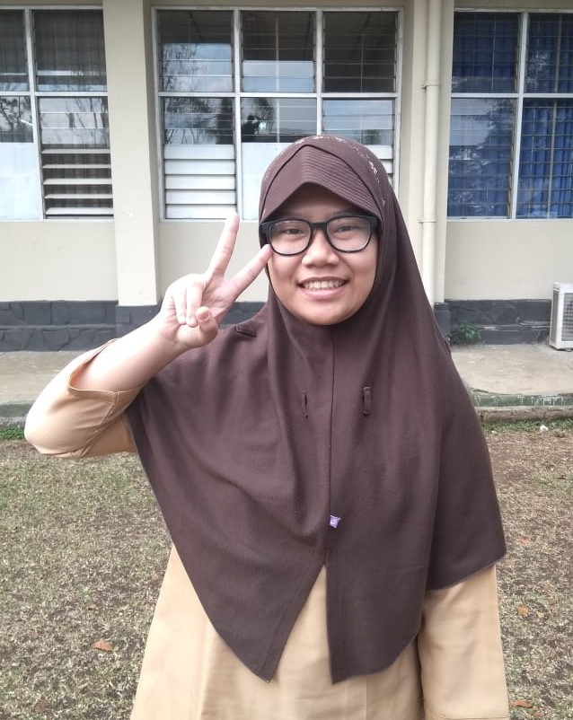

Biodata Diri
| Nama Lengkap | : | Nisrina Qurratu'ain |
| Tempat, Tanggal Lahir | : | Tangerang, 28 Februari 2001 |
| Jenis Kelamin | : | Perempuan |
| Agama | : | Islam |
| Golongan Darah | : | B |
| Alamat | : | Jalan Sultan Agung Raya, Perumnas 3, Cibodas Baru, Kota Tangerang |
| Hobby | : | Mendengarkan Musik dan Menonton Film |
| Asal Sekolah | : | SMAN 8 Kota Tangerang |
